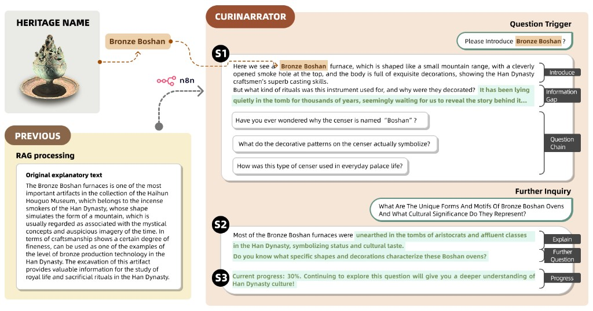

CuriNarrator
Curiosity-driven AI narratives for museum exploration
An AI-driven storytelling system that stimulates visitor curiosity through uncertainty, information gain, and progress feedback strategies while keeping narratives grounded and verifiable.
- Problem: Museum interpretation often struggles to sustain curiosity and personal relevance.
- System: LLM-based dialogue generation plus retrieval-augmented narrative support.
- Method: System design, narrative strategy modeling, and user-centered evaluation.